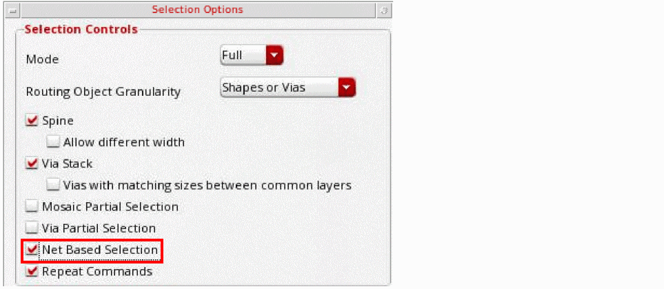

Ways to Select Shapes Based on Nets
You can use the net-based selection feature to select shapes based on their nets. You can enable this feature in the following ways:
-
Using the Net Based Selection toolbar: Select the Net Based Selection toolbar from the Window – Toolbars menu. Then, use the Net Based Selection icon on the toolbar.
-
Using the Net Based Selection option on the Selection Options form.
You can also use the environment variable netBasedSelectionOn to enable the net-based selection feature.
When you enable the net-based selection feature, the following are the ways in which you can specify the nets to select figures based on that net:
-
Specify the nets in the text field on the Net Based Selection toolbar.

-
Select the Tap Net icon on the Net Based Selection toolbar to populate nets by tapping an assigned shape in the canvas.
PressCtrland click to remove the net of the tapped shape from the list of nets. PressShiftand click to add the net of the tapped shape to the list of nets. - Select nets using the Navigator assistant.
When you select the Reverse option on the Net Based Selection toolbar, shapes, vias, and instances with a net other than the net specified in the text field can be selected in the canvas. You can also use the environment variable
Related Topics
Return to top